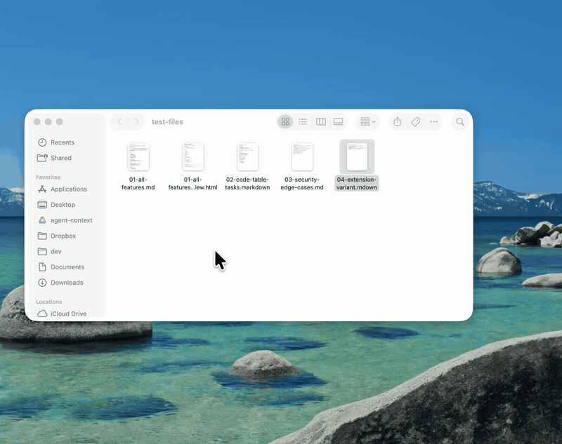

Render Markdown in macOS Quick Look. Free & open source.
A tiny macOS Quick Look extension. Select a .md file in Finder, press space, and read it rendered the way it was meant to look — headings, code, tables and task lists included. No app window, just a menu-bar helper that stays out of the way.

| Rich rendering. | Headings, lists, task lists, blockquotes, links, bold, italic, strikethrough and inline code. |
|---|---|
| Syntax-highlighted code. | Fenced code blocks highlighted with a clean GitHub-style theme, light and dark. |
| Real tables. | GitHub-flavored Markdown tables render as native AppKit tables — not raw pipes. |
| Sandboxed & offline. | Runs in a sandboxed Quick Look extension with no network access. A menu-bar helper, no Dock icon. |
Not notarized yet: on first launch macOS may say the app is from an unidentified developer. Right-click the app → Open → Open, or run xattr -dr com.apple.quarantine /Applications/MarkdownQuickLook.app. Prefer building from source? See the README.